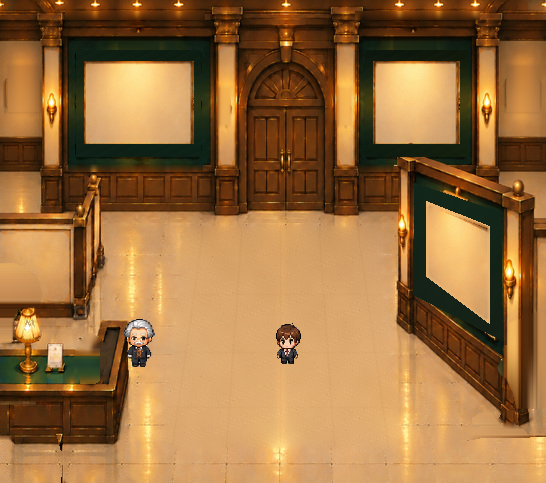
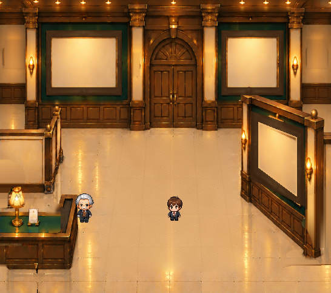
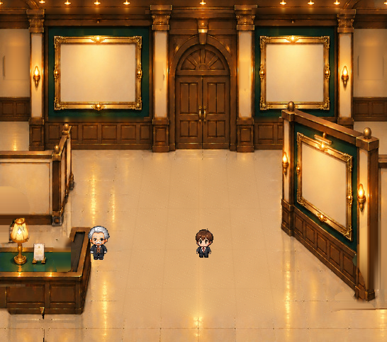

エントランスの額縁を、取り外してみました
赤い絨毯は非表示。写真を飾る窓を残したまま、3か所の額縁を切り替えて比較できます。

額縁なし／空き台紙／100%
これは美術確認用の完成候補です。Lv.1の採用デザインは未決定。原画の建築照明・壁灯・受付灯はまだ焼き込み状態で、次工程で独立化します。壁面の隠れていた部分は元画像からの推定復元です。
3種類の基本状態（すべて正式キャラ使用）



背面左右：原本由来5×5フレームと写真窓。右手前：原本の遠近台形を保持した等比変形。既存の正式キャラクターPNGをそのまま使用。ゲーム本体は未変更。